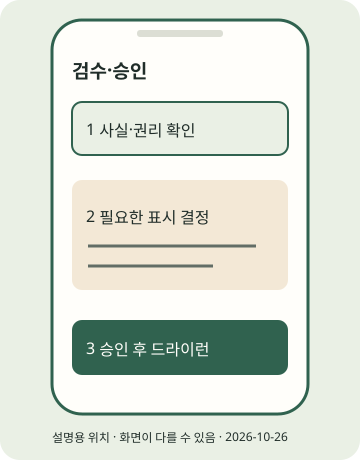

(실습) 실습편 / 6
(실습) 6. 게시 전 사람 검수
사실·권리·표시와 결과물을 확인하고 승인한다.
2026년 10월 조사 기준 · 확인일 2026-10-26 · 근거: PRAC-11 PRAC-12 PRAC-22 PRAC-25 · E2E 한눈에 보기
진행 기록은 자바스크립트를 켜면 이 브라우저에 저장합니다.
이 실습의 흐름

STEP 01 · 여섯 항목 직접 검수
여섯 항목 직접 검수
지금 하는 일
원문·카드·영상·권리·표시를 사람이 확인합니다.
왜 하는지
구조 검사와 생성 성공만으로 게시 준비가 끝나지 않습니다.
따라 하기
- 이론 12장 게시 전 체크리스트와 출력 폴더 REVIEW.md를 엽니다.
- 원출처·날짜·인명·수치·조건을 카드와 대조하고 모든 JPEG와 영상을 봅니다. 내레이션·음원·폰트·사진 권리, 캡션, is_ai_generated를 확인합니다.
- 검토한 여섯 줄의
- [ ]를- [x]로 바꿔 저장합니다. 합성 자료는 연습용임을 확인하는 것이며 실제 뉴스 게시 승인이 아닙니다.
이렇게 보이면 성공
REVIEW.md의 여섯 항목을 실제로 검토했고 여섯 줄만 [x]로 저장했습니다. 자동으로 체크하는 명령은 사용하지 않습니다.
이렇게 보이면?
- 모르는 권리·사실이 남으면 체크하지 말고 보류하세요.
- 캡션 수정은 REVIEW.md만 고치지 말고 copy.json을 고친 뒤 render부터 다시 합니다.
Windows
이 단계는 Windows와 무관한 휴대폰 또는 웹 작업입니다. 휴대폰 OS와 앱 버전의 화면 차이는 공식 도움말로 확인하세요.macOS
이 단계는 macOS와 무관한 휴대폰 또는 웹 작업입니다. 휴대폰 OS와 앱 버전의 화면 차이는 공식 도움말로 확인하세요.STEP 02 · AI·협찬 표시 판단
AI·협찬 표시 판단
지금 하는 일
필요한 표시와 게시 가능 여부를 결정합니다.
왜 하는지
캡션과 플랫폼 라벨을 서로 대체한다고 오해하지 않게 합니다.
따라 하기
- 실사형 합성 영상·사실적으로 들리는 합성 음성 등은 AI 자기공개 필요성을 검토합니다. AI 글쓰기 보조를 모두 같은 조건으로 판정하지 않습니다.
- 경제적 이해관계가 있으면 국내 표시 기준의 문구와 플랫폼 유료 파트너십 라벨을 각각 확인합니다. 광고 집행 허락은 별개입니다.
- 필요한 앱 라벨을 확인하지 못한 콘텐츠는 게시 준비 단계에 남깁니다. 아래 앱 메뉴의 위치는 7v 확인 전 후보입니다.
이렇게 보이면 성공
표시 필요 여부·근거·보류할 조건을 적었습니다. 필요한 라벨을 확인할 수 없는 상태는 완료로 판단하지 않습니다.
이렇게 보이면?
- 토글이 안 보인다고 의무가 없다고 판단하지 마세요.
- 캡션에 AI/광고 문구만 넣으면 플랫폼 라벨이 대체된다는 근거는 없습니다.
Windows
이 단계는 Windows와 무관한 휴대폰 또는 웹 작업입니다. 휴대폰 OS와 앱 버전의 화면 차이는 공식 도움말로 확인하세요.macOS
이 단계는 macOS와 무관한 휴대폰 또는 웹 작업입니다. 휴대폰 OS와 앱 버전의 화면 차이는 공식 도움말로 확인하세요.STEP 03 · 승인과 드라이런 확인
승인과 드라이런 확인
지금 하는 일
검수 기록을 승인하고 요청 미리보기를 봅니다.
왜 하는지
실제 전송 전에 파일 변경과 요청 경로를 확인합니다.
따라 하기
- 드라이런은 실제 요청을 보내지 않고 보낼 내용을 출력하는 연습입니다. 아래 approve 명령은 항상 드라이런입니다.
- APPROVED.json은 승인 시 파일 해시를 저장합니다. 해시는 파일이 바뀌었는지 비교하는 요약값입니다. dry-run.json에는 요청 미리보기가 생깁니다.
- 캐러셀 자식 JPEG → 상태 확인 → 부모 게시, 릴스 생성 → 상태 확인 → 게시 순서를 읽습니다. 이미지와 영상 URL은 아직 예시입니다. 앱 게시에는 공개 URL이 필요 없습니다.
이렇게 보이면 성공
"mode": "dry-run", "컨테이너 생성", "상태 확인", "게시"가 출력되고 APPROVED.json·dry-run.json이 생깁니다. 실제 게시하지 않습니다.
이렇게 보이면?
- 여섯 칸 오류면 검수표를 실제로 읽고 저장했는지 확인하세요.
- 검수 대상 변경 오류면 render → 새 검수 → approve 순서로 다시 합니다.
Windows
.venv\Scripts\python.exe run_pipeline.py approve output/first-post
.venv\Scripts\python.exe publish.py output/first-postmacOS
python run_pipeline.py approve output/first-post
python publish.py output/first-post지금 내 손에 있는 것
사실·권리·표시와 결과물을 확인하고 승인한다. 아래 단계 확인을 모두 마쳤는지 E2E에서 다시 봅니다. 선택하지 않은 포맷·심화는 미완료로 남겨도 됩니다.